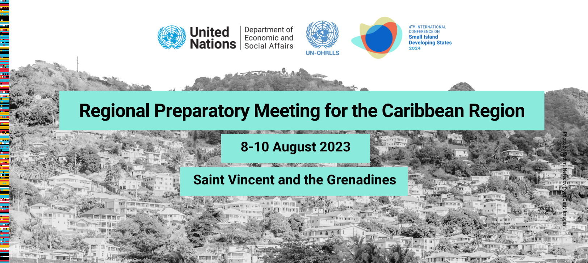

🧭 1. Purpose of the Meeting
•A preparatory meeting for the 2024 UN SIDS Conference (to be held in Antigua and Barbuda).
•Focus: Assess development progress and set regional priorities for small island developing states (SIDS) in the Caribbean.
🌊 2. Main Challenges Facing Caribbean SIDS
•Climate Change:
Rising sea levels, extreme weather, and changing patterns threaten ecosystems and economies.
•Economic Vulnerabilities:
Heavy reliance on tourism — severely impacted by COVID-19.
Growing public debt and lack of investment in SDGs and climate adaptation.
•Limited Carbon Footprint, High Exposure:
SIDS contribute only 0.2% of global emissions but suffer the worst climate impacts.
•Large Ocean States:
97% of their territory is ocean (e.g., The Bahamas’ EEZ = ~654,715 km²).
🗣️ 3. Key Quotes
•Keisal Melissa Peters, Foreign Minister, Saint Vincent and the Grenadines:
"We must assess where we are, define where we want to go, and how to get there."
•Li Jinhua, UN Under-Secretary-General:
“Regional collaboration and partnerships are essential to overcoming challenges and achieving sustainable solutions.”
“The UN is committed to supporting SIDS towards a resilient and sustainable future.”
📊 4. Strategic Goals
•Adopt a Caribbean-specific outcome document with:
Actionable strategies
Policy recommendations
•Document to feed directly into 2024 global SIDS conference preparations.
🗺️ 5. Road to the 2024 SIDS Conference
•Second regional review (Caribbean).
•Next steps:
Pacific regional meeting → Tonga
Final interregional meeting → Cabo Verde
•Focus at 2024 conference:
Full review of the SAMOA Pathway (adopted in 2014).
 To go places and do things that have never been done before – that’s what living is all about.
Kingstown, St. Vincent and the Grenadines – 8 August: A major meeting of the 16 Small Island Developing States (SIDS) of the Caribbean begins in Kingstown, St. Vincent and the Grenadines, today, to assess development progress and agree on priorities for next year’s United Nations conference on SIDS in Antigua and Barbuda.
The Caribbean SIDS—Antigua and Barbuda, Bahamas, Barbados, Belize, Cuba, Dominica, Dominican Republic, Grenada, Guyana, Haiti, Jamaica, Saint Kitts and Nevis, Saint Lucia, Saint Vincent and the Grenadines, Suriname, and Trinidad and Tobago—are battling unique challenges, including rising sea levels, extreme weather events and changing weather patterns that are threatening ecosystems and damaging economies.
“Our region is complex but we share a special bond, due to our small size and geographic positioning and our unique vulnerabilities; the effects of a changing climate and intense natural disasters, the impacts of various exogenous economic shocks and cascading impacts of global political instability are major factors on our development,” said Ms. Keisal Melissa Peters, Minister of Foreign Affairs and Foreign Trade, Saint Vincent and the Grenadines. “This is a signal moment, we must assess where we are, with a clear-eyed vision for where we want to go; and define how we are to get there.”
Small islands are in the crossfire of multiple crises: climate change, inequality and the economic and social repercussions of COVID-19, especially related to debt. The collapse in tourism due to the pandemic left large holes in the coffers of Caribbean islands and severely set back efforts to invest in the Sustainable Development Goals and climate change adaptation and mitigation.
SIDS are responsible for only 0.2 per cent of global carbon emissions and yet suffer most from the impacts of climate change. The constant cycle of disaster and recovery leaves them weakened and unable to implement adequate resilience measures.
These countries are also large ocean states, and 97 per cent of their territory is sea rather than land. For example, the Exclusive Economic Zone of the Bahamas comprises 654,715 km2 and is approximately the size of Germany and Italy together. As stewards of so much of the world’s ocean, the meeting will hear that a sustainable future for the planet relies on a renewed and strengthened partnership between all island nations and the international community.
“By fostering regional collaboration and partnerships, Caribbean nations can leverage their collective strength to overcome common challenges and embrace sustainable solutions,” said Li Jinhua, UN Under-Secretary General for Economic and Social Affairs, and Secretary-General of the 2024 UN SIDS Conference. “The United Nations is committed to supporting these initiatives to improve the livelihoods of SIDS communities and contribute to efforts towards a more resilient and sustainable future.”
The Caribbean meeting is the second regional review meeting on the path to the Fourth International Conference on Small Island Developing States, taking place in Antigua and Barbuda in May 2024. One additional regional meeting will be held in Tonga for the Pacific region, followed by a final interregional gathering in Cabo Verde.
Next year, the global conference will conduct a thorough evaluation of the progress made in implementing the SIDS Accelerated Modalities of Action (S.A.M.O.A.) Pathway, a significant international development agreement reached in 2014.
This week’s meeting in St. Vincent and the Grenadines will adopt an outcome document with comprehensive recommendations and strategic action plans specifically tailored for the Caribbean region. This document will play a vital role in the preparations for the 2024 conference.